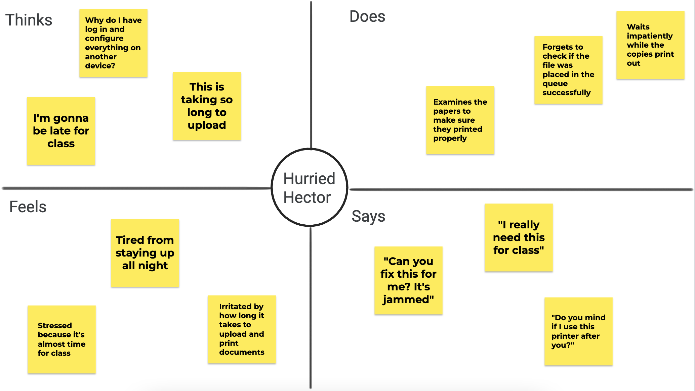
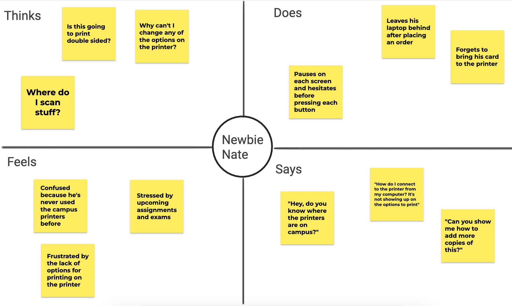
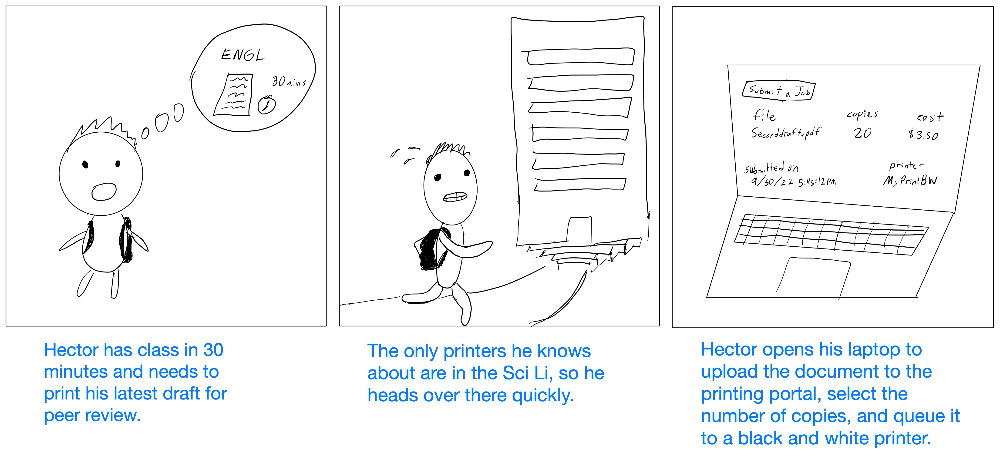
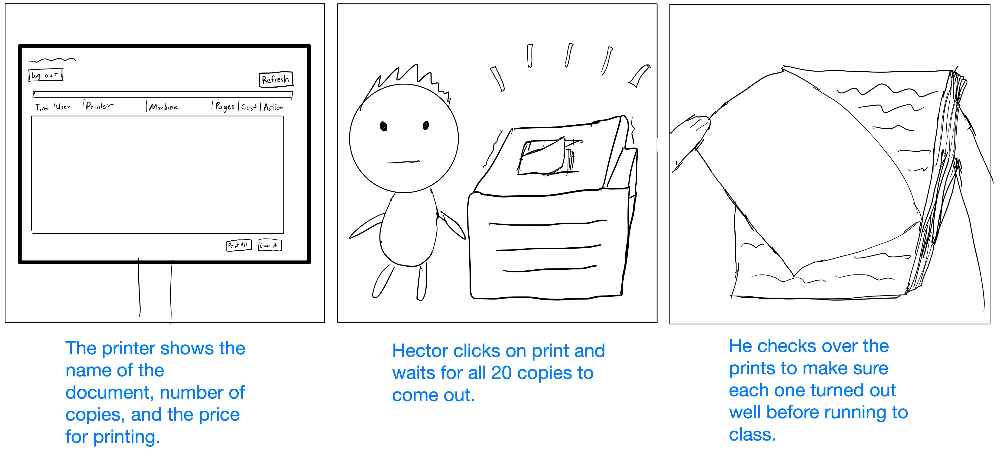

Personas and Storyboarding
Understanding how printers are used at Brown University
Objective
Perform user research on the printers and summarize the interactions using personas and storyboarding.
Interviewing
In order to get a better idea of how people print at Brown using the printing service, I
observed and interviewed three people in the Sciences Library basement who were printing papers out.
Summary of Responses
- Experienced (10+ times used) and unexperienced (less than 4 times) users had no problems navigating the physical printing interface.
- The online printer service was annoying to use and confusing to learn at first.
- People wanted to know where the printers are around campus.
- Users didn't know how to use features like copying papers or selecting pages to print.
Observations
All three observed users swiped their cards at the printing station. The swipe changed the screen to the printing queue page.
The amount of time between this page and the completion of printing varied between about 20 seconds to 5 minutes.
One user brought her computer to the printer and appeared to be modifying a document before printing her paper.
Another person swiped into the computer then walked back to his laptop at his desk. The queue page had several files on it.
Developing Personas
Two provisional personas were created using the observations and responses recorded from users.

Hector is a junior at Brown. He has class in 30 minutes and needs to print his draft for review.
In his haste, Hector forgets to format his pages perfectly before uploading them. He is forced to fix
the mistakes from his laptop and reupload everything instead of being able to do so from the interface.
Hector represents the cohort of users that are familiar with using the printers at Brown but also face the
time challenges that university has. His forgetfulness could stem from stress of finals, fatigue,
or social pressures, which are all highly relevant issues to Brown students.

Nate is a new student and has never used the printer at Brown before. He struggles with the unfamiliar
process of queuing a printing job from the computer. Nate doesn't know where he can
print his papers around campus, either. His limited knowledge of the interface slows down how fast he's
able to print, which could be problematic for close deadlines.
Nate is representative of new users, which is a large proportion of the user base since nearly 1600
freshman learn to use the printers each year. As a new user, Nate's biggest problem is unfamiliarity;
printing papers takes at least a few times to get used to it, and some people will need help with
their first time printing.
Storyboard
The storyboard takes one of the personas I created and places them in a scenario that exemplifies how that persona
would interact with the printer. This is helpful for thinking about what issues certain groups might face when using the
printer.
Hurried Hector


